DR-001 · Medium priority
Search · English
Keep the query, scope and completion summary visible with a complete result. Secondary search options move into a disclosure; every existing option is retained.
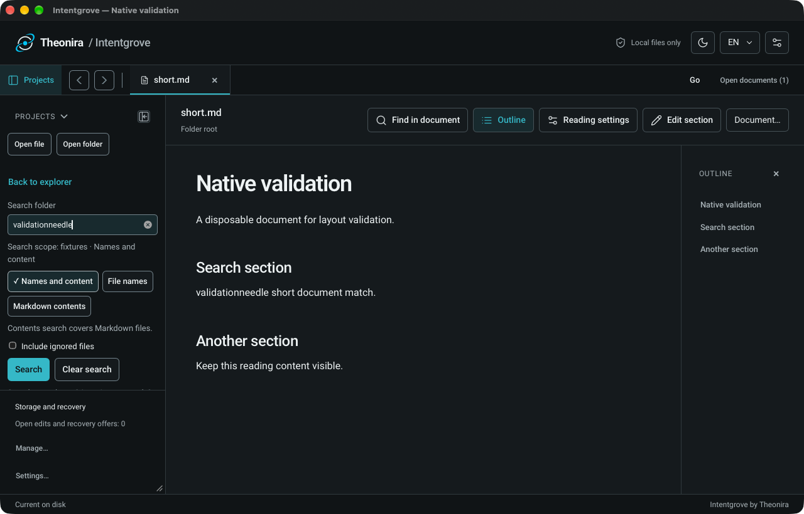
DR-001 · Medium priority
Búsqueda · Español
Spanish uses the same compact structure. Labels stay readable; the footer remains in its existing position.

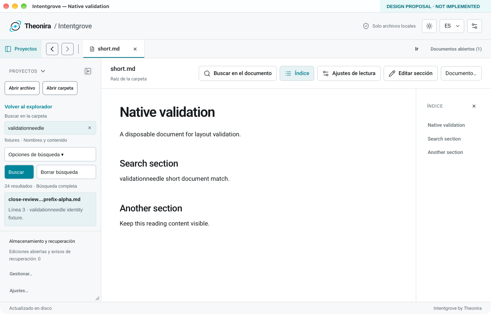
DR-001 · Medium priority
Later result · query stays visible
Illustrated later-result state: results scroll independently while query and scope remain visible. This is a static state, not verified app behavior.
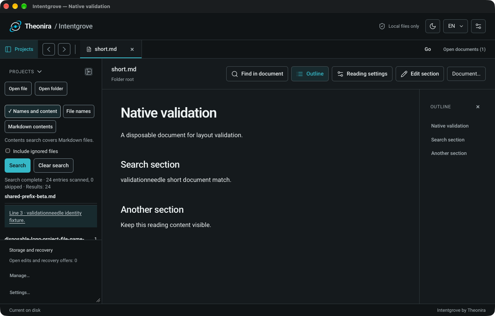
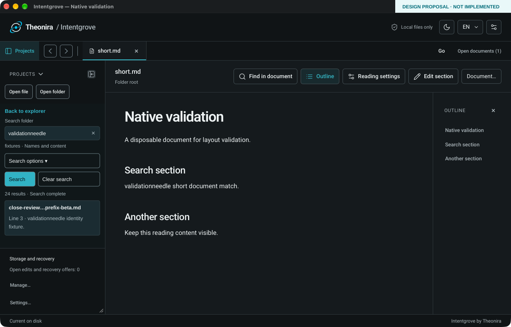
DR-002 · Medium priority
A compact filename header
Replace six wrapped filename lines with a suffix-preserving identity. The identical-content short frame anchors the proposed reader position: approximately 120px of reading height recovered.
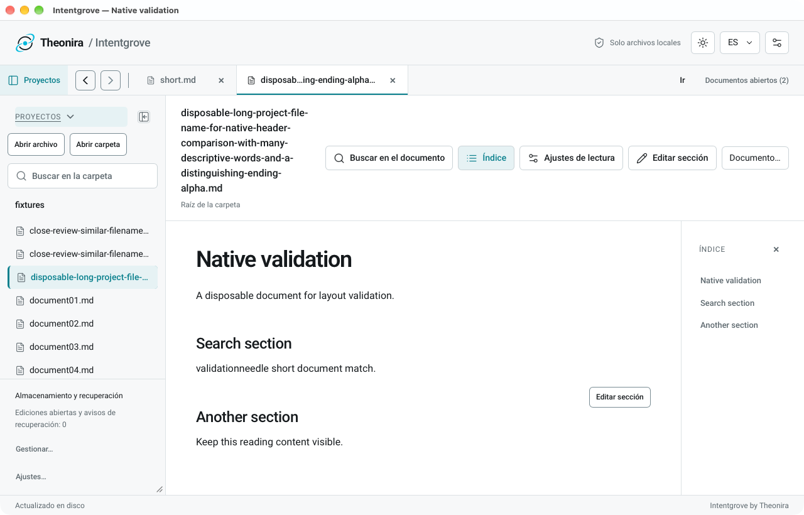
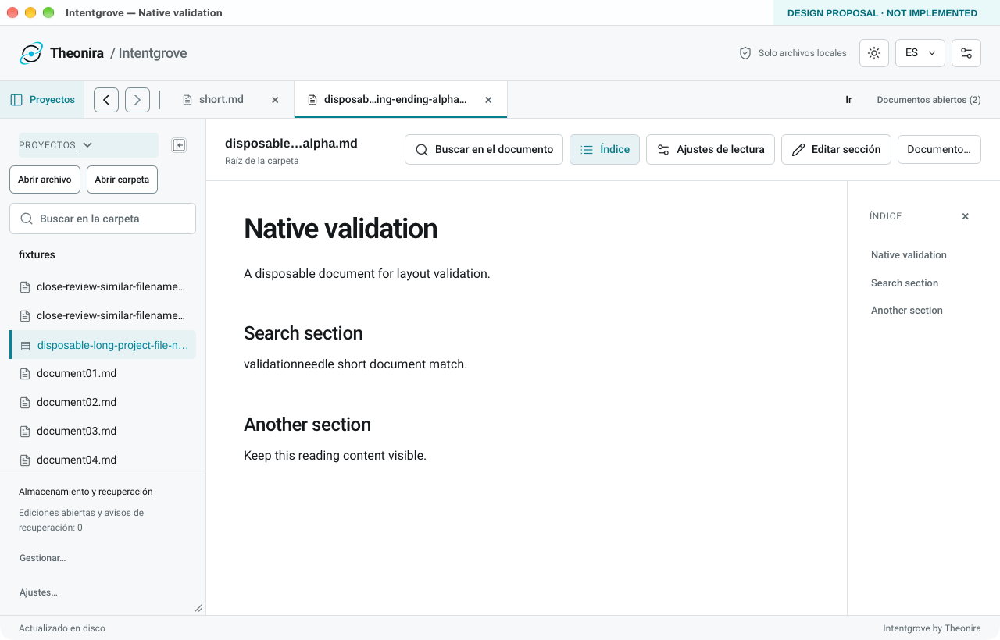
DR-004 · Medium priority
Explain Save and Keep draft
Name the Save destination and explain the return-to-reading consequences. Preserve the primary draft option, Cancel and Discard. No restart or durability promise.
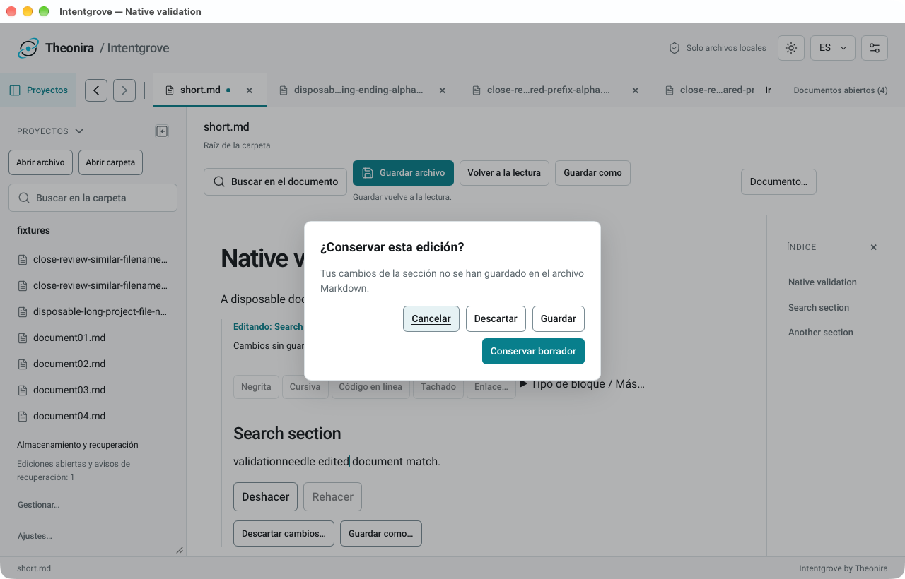
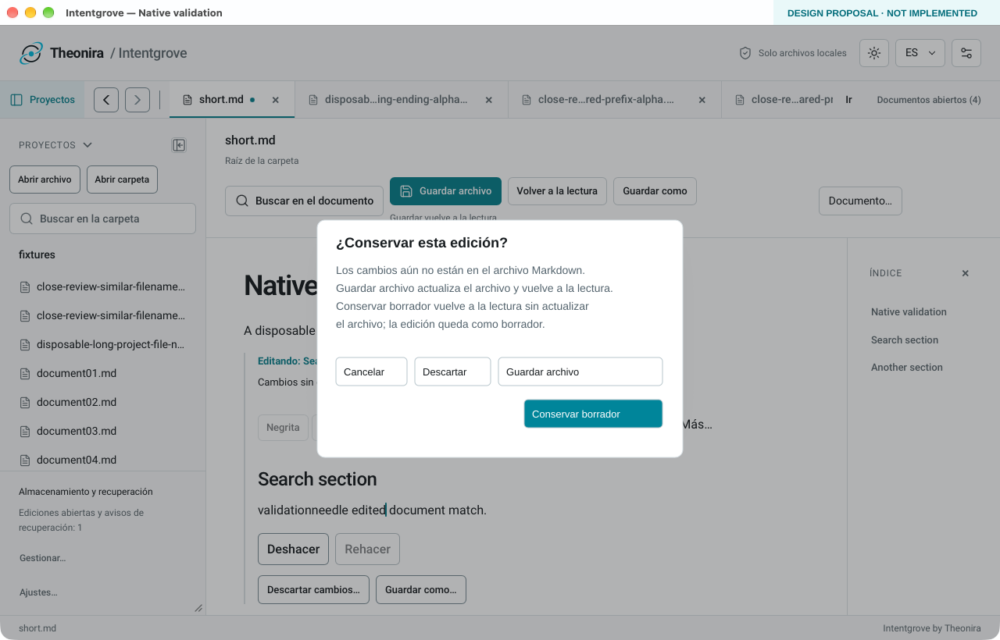
DR-005 · Low priority
Make alpha and beta distinguishable
Keep existing row height and selection cues. Preserve distinguishing endings for colliding names, and retain Open documents for complete filenames and paths.
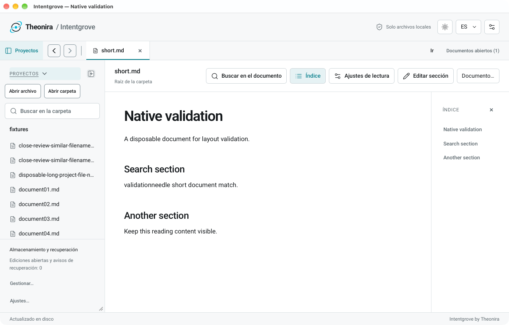
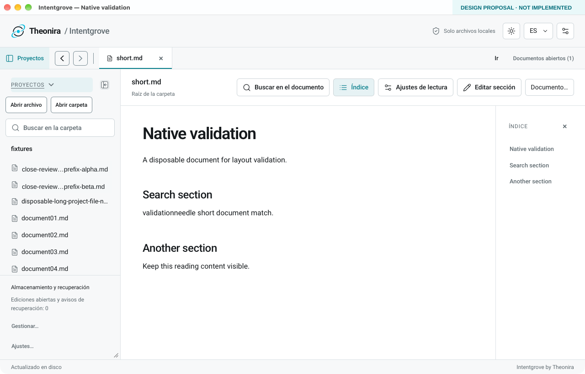
Preserve / validate
Keep the good patterns.
Preserve the Projects header close control, document-column toolbar, storage footer, reading rhythm, outline and safe draft emphasis.
DR-003 remains blocked. Narrow native behavior was not captured. This review page adapts to small screens; that adaptation is not a proposed or validated native app layout.
Remaining checks: search keyboard/pointer behavior, expanded search options, full identity for unopened rows, tree labels at a second width, and actual Save/Keep outcomes. Source supports intended Save/draft semantics; persistence was not tested.
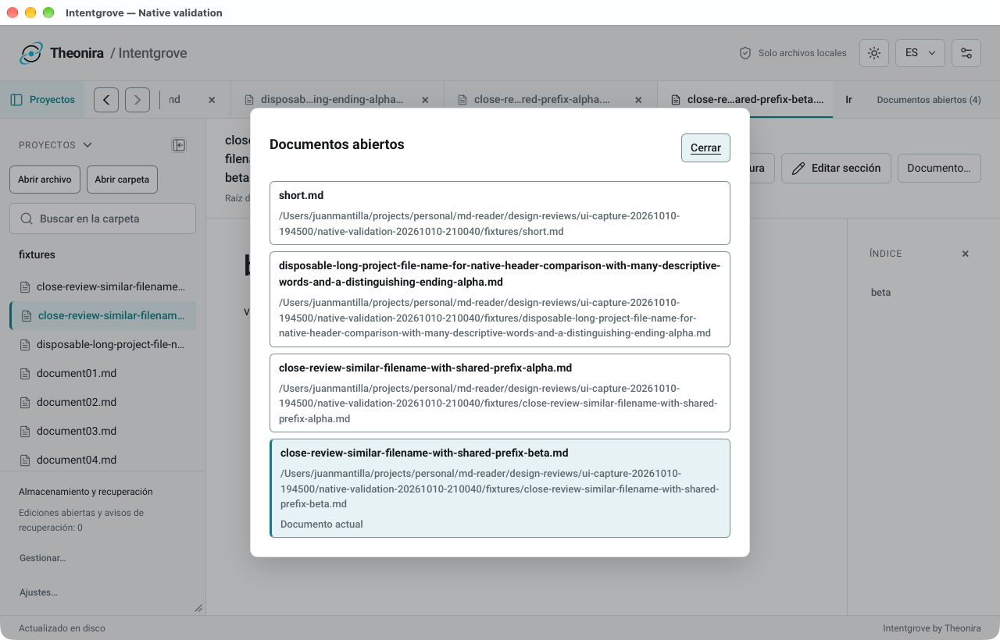